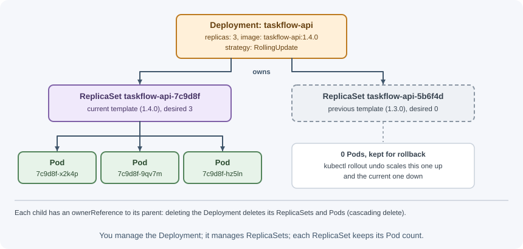
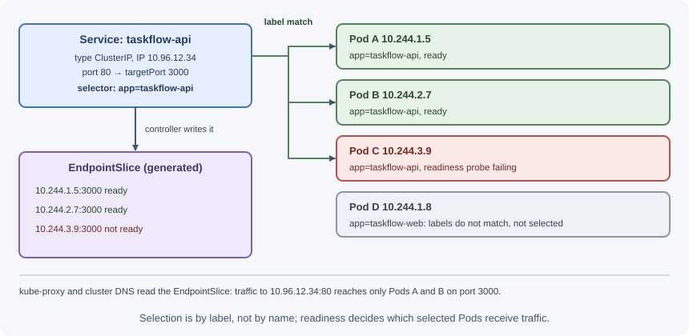
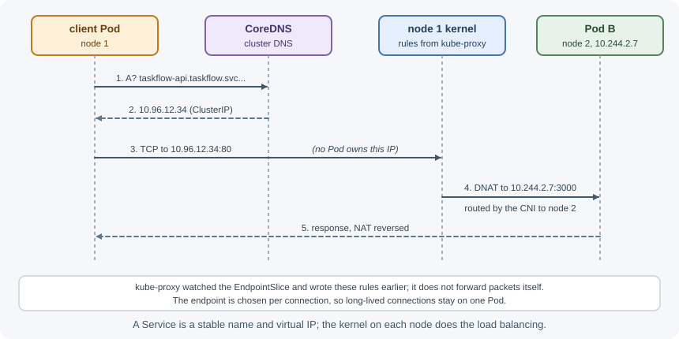

Pods, Deployments, and Services¶
Three objects carry almost every stateless application on Kubernetes. A Pod is the smallest thing Kubernetes runs: one or more containers that share a network identity and storage. A Deployment keeps a set of identical Pods running and replaces them gradually when you change the template. A Service gives that changing set of Pods one stable name and virtual IP address and spreads connections across the ready ones.
This lesson covers how Pods share networking and storage, init and
sidecar containers (including native sidecars), labels and selectors,
ReplicaSets and Deployments, the Service types (ClusterIP, NodePort,
LoadBalancer, headless), EndpointSlices, cluster DNS names, what actually
happens to a packet sent to a Service, full manifests for the TaskFlow
API, and the kubectl commands you will use every day.
Why it matters¶
Most Kubernetes debugging comes down to these objects. A Service with no endpoints because one label is misspelled, a Deployment stuck because the image cannot be pulled, gRPC traffic that lands on a single Pod, a sidecar that keeps a Job from finishing: all are explained by how Pods, ReplicaSets, Services, and EndpointSlices fit together. Writing the manifests well (labels, named ports, resource requests, probes, security settings) also decides how safely every later rollout and scaling event behaves.
Real-world usage¶
- GitHub. The engineering post Kubernetes at GitHub (2017) describes moving the main Ruby on Rails application that serves github.com and its API onto Kubernetes Pods behind Services, and the review-lab environments that made each pull request deployable.
- Kubernetes project: native sidecars. The blog post
Kubernetes v1.28: Introducing native sidecar containers
explains why sidecars needed first-class support: ordinary sidecar
containers could start after the app and kept Jobs from completing, which
the
restartPolicy: Alwaysinit-container form fixes. - Kubernetes project: gRPC load balancing. The post gRPC Load Balancing on Kubernetes without Tears shows that a ClusterIP Service balances connections, not requests, so long-lived HTTP/2 connections pin to one Pod unless the client or a proxy balances per request.
- Kubernetes documentation. The Service concept page defines the Service types and selectors used throughout this lesson.
Popular tools and providers: kubectl, k9s and Lens for browsing
clusters, stern for multi-Pod logs, kubectx and kubens for switching
contexts, CoreDNS, and CNI plugins such as Cilium, Calico, and the cloud
providers' VPC plugins.
How it works¶
Pods¶
A Pod is a group of containers that are always scheduled together on the same node and share:
- One network namespace: one IP address, one port space, and
localhost. Two containers in a Pod cannot both listen on port 3000. - Volumes declared in the Pod spec, which several containers can
mount (an
emptyDiris the usual way to share files). - A lifecycle: the Pod is created, runs, and is deleted as a unit.
Every Pod gets its own cluster-wide IP address, and by default every Pod can reach every other Pod directly without NAT; the CNI plugin implements this flat network. Pod IPs change whenever Pods are replaced, which is why clients use Services instead.
A Pod's status.phase is Pending (accepted, not yet running: waiting
for scheduling or image pulls), Running, Succeeded, Failed, or
Unknown. Each container also has a state (Waiting with a reason such
as ImagePullBackOff or CrashLoopBackOff, Running, or Terminated
with an exit code). Pods are disposable: they are never moved or
repaired, only replaced. Do not create bare Pods for applications; let a
controller such as a Deployment own them.
Init containers and sidecars¶
- Init containers run one after another, each to completion, before the app containers start. They suit one-time preparation: waiting for a dependency, fetching configuration, setting file permissions.
- Sidecar containers run alongside the app for its whole life: a log
shipper, a proxy, a metrics agent. Since Kubernetes 1.29 (stable in
1.33), a sidecar is declared as an init container with
restartPolicy: Always. Such native sidecars start before the app containers, keep running, are restarted if they crash, and are stopped only after the app containers have exited, so they no longer block Jobs from completing or lose the app's last log lines.
Labels and selectors¶
Labels are key-value pairs on any object (app.kubernetes.io/name:
taskflow-api, env: prod). Selectors pick objects by label, either by
equality (matchLabels) or by set expressions (matchExpressions with
In, NotIn, Exists). Controllers and Services find their Pods only
through selectors, never by name. The recommended labels
app.kubernetes.io/name, app.kubernetes.io/instance,
app.kubernetes.io/version, app.kubernetes.io/component, and
app.kubernetes.io/part-of make tools and dashboards work consistently.
A Deployment's spec.selector is immutable after creation, and it must
match the labels in its Pod template, or the API server rejects the
object.
ReplicaSets and Deployments¶
A ReplicaSet keeps a given number of Pods matching its selector
running: it creates Pods when there are too few and deletes them when
there are too many. A Deployment manages ReplicaSets so you can change
the Pod template safely. Each distinct template gets its own ReplicaSet,
named with a hash of the template (pod-template-hash).

When you change the image, the Deployment creates a new ReplicaSet and
shifts Pods from the old one to the new one according to its strategy
(rolling update by default; covered in
health probes and rolling updates).
Old ReplicaSets are kept, scaled to zero, up to revisionHistoryLimit
(default 10), which is what makes kubectl rollout undo instant. Changing
only replicas scales the current ReplicaSet without creating a new one.
Services¶
A Service selects Pods by label and gives them a stable virtual IP (the
ClusterIP) and DNS name. Its port is what clients connect to; its
targetPort is the container port (a number or a named port).

| Type | Reachable from | How | Typical use |
|---|---|---|---|
ClusterIP (default) |
Inside the cluster | A virtual IP and DNS name | Service-to-service traffic; the backend of an Ingress |
NodePort |
Outside, via any node's IP | Opens the same port (30000-32767 by default) on every node, plus a ClusterIP | Bare-metal setups, or as a building block for external load balancers |
LoadBalancer |
Outside, via a cloud load balancer | The cloud controller provisions a load balancer that targets the nodes or Pods | Exposing a TCP or UDP service directly |
ExternalName |
Inside the cluster | A DNS CNAME to an outside name | Giving an external database an in-cluster name |
Headless (clusterIP: None) |
Inside the cluster | No virtual IP; DNS returns the Pod IPs | StatefulSets, client-side load balancing |
For HTTP traffic from the internet, one Ingress or Gateway in front of many ClusterIP Services is usually better than one LoadBalancer per Service (see Ingress, networking, and Helm).
EndpointSlices¶
The EndpointSlice controller watches each Service's selector and writes
EndpointSlice objects listing the matching Pods' IPs and ports, each
with ready, serving, and terminating conditions. Readiness is the
key: a Pod whose readiness probe fails stays in the slice but is marked
not ready, and receives no new traffic. EndpointSlices replaced the older
single Endpoints object (now deprecated) because one huge object per
Service did not scale for Services with thousands of Pods.
Cluster DNS¶
CoreDNS gives every Service a DNS name:
<service>.<namespace>.svc.cluster.local. Inside the same namespace the
short name works (taskflow-api); from another namespace use
taskflow-api.taskflow. A ClusterIP Service resolves to its virtual IP; a
headless Service resolves to the IPs of its ready Pods, and StatefulSet
Pods also get individual names such as
mongo-0.mongo.taskflow.svc.cluster.local.
Pods' /etc/resolv.conf contains search domains and ndots:5, so a name
with fewer than five dots is first tried with each search suffix. Lookups
of external names such as api.example.com therefore generate several
failed queries first; a trailing dot (api.example.com.) or a lower
ndots in the Pod's dnsConfig avoids that when it matters.
What happens when a Pod calls a Service¶

Three details explain many surprises:
- kube-proxy is not a proxy in the data path. It watches Services and EndpointSlices and programs kernel rules (iptables or nftables; the older IPVS mode is deprecated) on every node; the kernel rewrites packets. Some CNI plugins (Cilium, for example) replace kube-proxy with eBPF programs that do the same job.
- Balancing is per connection. With HTTP keep-alive or HTTP/2 (gRPC), one long-lived connection carries many requests to the same Pod. New Pods added by autoscaling get no traffic from existing connections. Clients that need per-request balancing use a headless Service with client-side balancing, or a service mesh or L7 proxy.
- The ClusterIP works only inside the cluster. You cannot ping it, and
it does not exist outside; use
kubectl port-forwardfor local access.
When to use and when not to use¶
| Need | Use |
|---|---|
| Run a stateless API or web app | Deployment + ClusterIP Service |
| Expose HTTP(S) to the internet | ClusterIP Service behind an Ingress or Gateway |
| Expose a non-HTTP TCP or UDP service externally | LoadBalancer Service |
| Stable identity and storage per replica | StatefulSet + headless Service |
| One Pod per node (agents) | DaemonSet |
| Run to completion | Job or CronJob |
| A helper that must start before the app | Init container |
| A helper that runs beside the app | Native sidecar (init container with restartPolicy: Always) |
| A one-off debugging shell | kubectl debug or kubectl run --rm -it |
Avoid bare Pods for anything that should survive a node failure, avoid
NodePort as a public entry point in the cloud, and avoid one
LoadBalancer per HTTP service, which multiplies cost and TLS
configuration.
Practical examples¶
The TaskFlow API Deployment¶
# k8s/api-deployment.yaml
apiVersion: apps/v1
kind: Deployment
metadata:
name: taskflow-api
namespace: taskflow
labels:
app.kubernetes.io/name: taskflow-api
app.kubernetes.io/part-of: taskflow
spec:
replicas: 3
revisionHistoryLimit: 5
selector:
matchLabels:
app.kubernetes.io/name: taskflow-api
template:
metadata:
labels:
app.kubernetes.io/name: taskflow-api
app.kubernetes.io/part-of: taskflow
spec:
securityContext:
runAsNonRoot: true
runAsUser: 1000
runAsGroup: 1000
seccompProfile:
type: RuntimeDefault
containers:
- name: api
image: ghcr.io/example/taskflow-api:1.4.0
ports:
- name: http
containerPort: 3000
env:
- name: PORT
value: "3000"
- name: MONGODB_URI
valueFrom:
secretKeyRef:
name: taskflow-api-secrets
key: mongodb-uri
resources:
requests:
cpu: 250m
memory: 256Mi
limits:
memory: 512Mi
readinessProbe:
httpGet:
path: /readyz
port: http
periodSeconds: 5
livenessProbe:
httpGet:
path: /healthz
port: http
periodSeconds: 10
securityContext:
allowPrivilegeEscalation: false
readOnlyRootFilesystem: true
capabilities:
drop: ["ALL"]
volumeMounts:
- name: tmp
mountPath: /tmp
volumes:
- name: tmp
emptyDir: {}
Points worth noticing:
- The selector and the template labels match, and use the recommended
app.kubernetes.io/namekey. - The port is named
http, so probes and the Service refer to the name rather than repeating3000. - The connection string comes from a Secret (see configuration and Secrets).
- Requests let the scheduler place the Pod; the memory limit bounds a leak (see scaling and resource management).
- The security settings mirror the hardened
docker runfrom container security: non-root, no privilege escalation, no capabilities, read-only root, and anemptyDirfor/tmp.
The Service¶
# k8s/api-service.yaml
apiVersion: v1
kind: Service
metadata:
name: taskflow-api
namespace: taskflow
labels:
app.kubernetes.io/name: taskflow-api
spec:
type: ClusterIP
selector:
app.kubernetes.io/name: taskflow-api
ports:
- name: http
port: 80
targetPort: http
kubectl apply -f k8s/
kubectl -n taskflow get deploy,rs,pods,svc -l app.kubernetes.io/name=taskflow-api
kubectl -n taskflow get endpointslices -l kubernetes.io/service-name=taskflow-api
Other Pods in the namespace now reach the API at http://taskflow-api,
and Pods elsewhere at http://taskflow-api.taskflow.
An init container and a native sidecar¶
# k8s/legacy-worker.yaml (excerpt): wait for a dependency, ship a log file
apiVersion: apps/v1
kind: Deployment
metadata:
name: legacy-worker
namespace: taskflow
spec:
replicas: 1
selector:
matchLabels:
app.kubernetes.io/name: legacy-worker
template:
metadata:
labels:
app.kubernetes.io/name: legacy-worker
spec:
initContainers:
- name: wait-for-mongo
image: busybox:1.37
command: ["sh", "-c", "until nslookup mongo.taskflow.svc.cluster.local; do sleep 2; done"]
- name: log-shipper
image: alpine:3.22
restartPolicy: Always # native sidecar: starts first, stops last
command: ["sh", "-c", "tail -F /var/log/app/worker.log"]
volumeMounts:
- name: logs
mountPath: /var/log/app
containers:
- name: worker
image: ghcr.io/example/legacy-worker:2.1.0
volumeMounts:
- name: logs
mountPath: /var/log/app
volumes:
- name: logs
emptyDir: {}
The first init container blocks until the MongoDB Service name resolves.
The second has restartPolicy: Always, which turns it into a sidecar:
it keeps running beside the worker and prints the log file the legacy
worker writes, so the lines appear in kubectl logs -c log-shipper. Apps
you control should simply log to stdout instead.
Everyday kubectl commands¶
# Look
kubectl get pods -n taskflow -o wide # node and IP per Pod
kubectl get pods -n taskflow --show-labels
kubectl describe pod <pod> -n taskflow # events: scheduling, pulls, probes
kubectl get events -n taskflow --sort-by=.metadata.creationTimestamp
# Logs and shells
kubectl logs -n taskflow deploy/taskflow-api -f # one Pod of the Deployment
kubectl logs -n taskflow -l app.kubernetes.io/name=taskflow-api --tail=50 --prefix
kubectl logs -n taskflow <pod> --previous # the crashed container's last run
kubectl exec -it -n taskflow <pod> -- sh
kubectl debug -it -n taskflow <pod> --image=busybox:1.37 --target=api # ephemeral container
# Reach things from your laptop
kubectl port-forward -n taskflow svc/taskflow-api 8080:80
curl http://localhost:8080/healthz
# Change things
kubectl apply -f k8s/
kubectl diff -f k8s/
kubectl scale -n taskflow deploy/taskflow-api --replicas=5
kubectl rollout status -n taskflow deploy/taskflow-api
kubectl delete -f k8s/legacy-worker.yaml
# Learn the schema
kubectl explain deployment.spec.template.spec.containers.readinessProbe
Testing Service DNS from inside the cluster¶
kubectl run -n taskflow dns-test --rm -it --restart=Never --image=busybox:1.37 -- \
sh -c 'nslookup taskflow-api; wget -qO- http://taskflow-api/healthz'
Best practices¶
- Never run bare Pods for applications; use Deployments (or StatefulSets, Jobs, DaemonSets).
- Use the recommended
app.kubernetes.io/*labels consistently and keep selectors minimal and stable. - Name container ports and reference the names from probes and Services.
- Run at least two replicas of anything that serves traffic.
- Give every container resource requests and a memory limit.
- Set Pod and container
securityContext(non-root, no privilege escalation, dropped capabilities, read-only root filesystem). - Use ClusterIP Services by default and one Ingress or Gateway for HTTP entry.
- Use native sidecars for helpers that must outlive the app container.
- Use fully qualified Service names across namespaces.
In production¶
- The Service returns connection refused or 503 for every request.
Detect:
kubectl get endpointslices -l kubernetes.io/service-name=taskflow-apishows no endpoints, or all of them not ready. Cause: the Service selector does not match the Pod labels (a typo or a changed label), thetargetPortis wrong, or every Pod fails readiness. Fix: comparekubectl get svc -o yamlwithkubectl get pods --show-labels, fix the selector or port, and check readiness probe failures inkubectl describe pod. - New Pods stay in
ImagePullBackOff. Detect:kubectl describe podshowsFailed to pull image ... not foundorunauthorized. Cause: a wrong tag or digest, or a private registry without credentials. Fix: correct the reference, and add animagePullSecretsentry or node-level registry permissions. - A Pod is in
CrashLoopBackOff. Detect: restarts climb, and the back-off delay between them grows to five minutes. Cause: the container exits on start: missing configuration, an unreachable dependency, or a failing liveness probe. Fix:kubectl logs --previousfor the last run's output andkubectl describe podfor the exit code and probe events. - gRPC traffic all lands on one or two Pods after scaling out. Detect: per-Pod request metrics are badly uneven; new Pods are idle. Cause: ClusterIP Services balance connections, and HTTP/2 clients keep one connection open. Fix: client-side load balancing over a headless Service, a service mesh, or periodic connection recycling.
- Changing a Deployment's labels fails with
field is immutable. Detect:kubectl applyrejectsspec.selector. Cause: selectors cannot change after creation. Fix: create a new Deployment with the new selector, shift traffic, then delete the old one; or keep selectors minimal so they never need to change. - Outbound calls to external APIs are slow to start.
Detect: DNS latency is high and CoreDNS logs show many
NXDOMAINqueries for names likeapi.example.com.taskflow.svc.cluster.local. Cause:ndots:5makes each external lookup try every search domain first. Fix: use fully qualified names with a trailing dot or lowerndotsindnsConfig, and consider NodeLocal DNSCache for heavy lookup rates.
Important terminology¶
- Pod: One or more containers scheduled together, sharing a network namespace and volumes.
- Init container: A container that runs to completion before the app containers start.
- Native sidecar: An init container with
restartPolicy: Alwaysthat runs alongside the app for the Pod's life. - Label / selector: Key-value metadata, and a query that matches objects by it.
- ReplicaSet: Keeps a fixed number of identical Pods running.
- Deployment: Manages ReplicaSets to roll out template changes and roll them back.
- Service: A stable virtual IP and DNS name for a set of Pods chosen by selector.
- ClusterIP / NodePort / LoadBalancer / headless: The ways a Service is exposed.
- EndpointSlice: The generated list of a Service's backend addresses and their readiness.
- kube-proxy: The node agent that programs kernel rules implementing Service virtual IPs.
- CoreDNS: The cluster DNS server that resolves Service and Pod names.
Common mistakes and misconceptions¶
- Creating Pods directly and expecting them to come back after a node failure.
- Assuming a Service routes to Pods by name or by Deployment rather than by label.
- Thinking a ClusterIP can be reached from outside the cluster.
- Believing kube-proxy forwards traffic itself and is a bottleneck.
- Expecting even request distribution for long-lived connections.
- Using
latestimage tags in Deployments, sokubectl rollout restartsilently changes the version. - Putting two containers that listen on the same port into one Pod.
- Using
kubectl editin production instead of changing the manifest in Git.
Revision questions¶
- What do containers in the same Pod share, and what consequences does that have for ports?
- Why should applications run under a Deployment instead of as bare Pods?
- Explain how a Deployment, its ReplicaSets, and Pods relate during an
image change and during
kubectl rollout undo. - A Service selects
app=taskflow-api, and four Pods carry that label, but one fails its readiness probe. How many receive new connections, and where can you see that? - Compare ClusterIP, NodePort, LoadBalancer, and headless Services.
- What DNS name would a Pod in namespace
webuse to reach thetaskflow-apiService in namespacetaskflow? - Why can scaling a gRPC backend from 3 to 6 Pods leave the new Pods idle?
- What changed with native sidecar containers, and which problem with Jobs did they solve?
Further learning¶
- Kubernetes documentation: Pods
- Kubernetes documentation: Sidecar containers
- Kubernetes documentation: Deployments
- Kubernetes documentation: EndpointSlices
- Kubernetes documentation: DNS for Services and Pods
- Kubernetes documentation: Recommended labels
- Next: configuration and Secrets. Back to the Kubernetes overview.